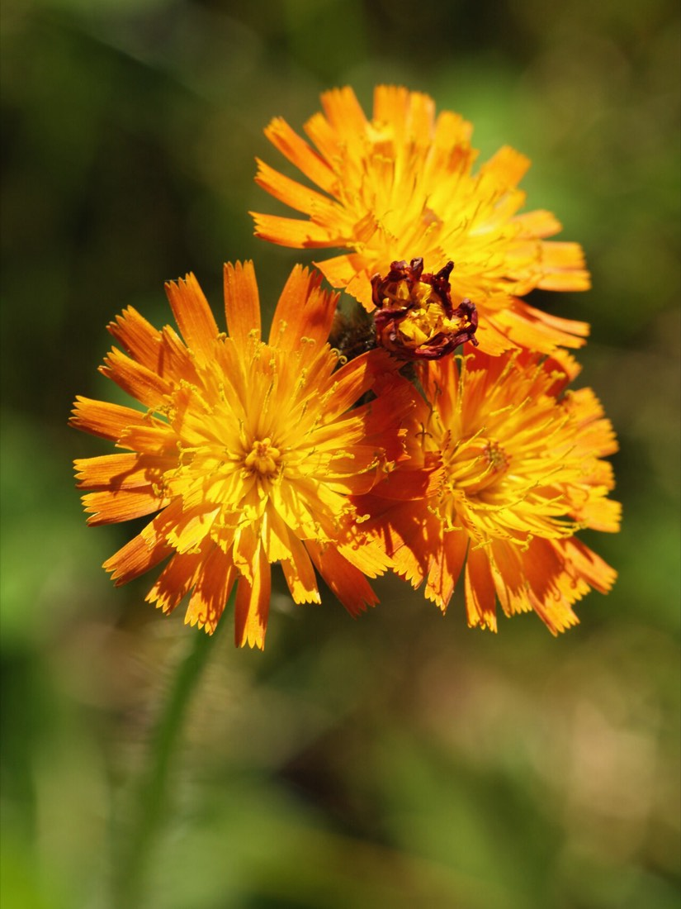
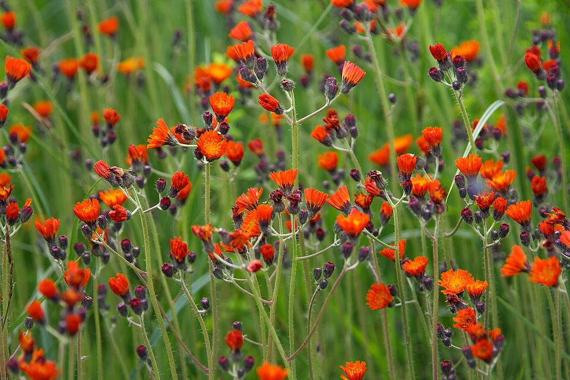

Orange Hawkweed
Hieracium aurantiacum, Pilosella aurantiaca


- Kind
- herb · Asteraceae
- Native to Vermont
- no
- Legal status
- Not on the Agency of Agriculture quarantine list (effective 2026-06-16. (checked 2026-10-31)
Names
Orange hawkweed, Hieracium aurantiacum (Go Botany also lists the synonym Pilosella aurantiaca), in the family Asteraceae.
Range and habitat
Not native: Go Botany answers "No" to native to North America and says it is native to Europe; it records the plant as present in Vermont and calls it "a sometimes aggressive weed of pastures, rangelands, grasslands, and meadows". It lists human-disturbed habitats and meadows and fields (Flora Novae Angliae adds roadsides and lawns). Minnesota Wildflowers gives origin as Europe and lists part shade or sun; dry fields, along roads and disturbed soil.
How to identify (by season; look-alikes and the key difference)
- Flower heads: made only of rays (no disk flowers), orange or pink-red, rays 10 to 14 mm long, the base of the head 6 to 8 mm tall.
- Leaves: simple and untoothed, alternate on the stem and also at the base; blades 45 to 160 mm long and 10 to 35 mm wide, narrow, widest toward the tip, with no leaf stalk.
- Spread: Go Botany says there are stolons (creeping above-ground stems) on some plants.
Through the year
Dates are typical for Vermont and shift with elevation and year; "approximate" means the source gave a season and the dates are a translation of it.
| When | What | Look for | What to do | Dates |
|---|---|---|---|---|
| Jun 1 to Oct 31 | flower (identify) | Clusters of orange (or pink-red) flower heads made only of rays, over untoothed leaves at the base and on the stem; some plants spread by stolons. | approximate |
What helps it thrive (light, soil and moisture, and how it is kept)
- Light: may be favored by high light and is called shade-intolerant by one fact sheet, though it also occurs in forest openings and shaded interiors (FEIS).
- Soil and place: well-drained soil; dry and moist soils; may tolerate low-nutrient, acidic or disturbed soils; roadsides, meadows, fields and forest clearings.
- Spread and disturbance: stolons grow over the summer and form new rosettes at their tips. Mowing does not control it: the rosettes sit too low for the blades and mowing may encourage spread; grazing also encourages spread. Disturbance favors it.
- Use to others: deer ate it in Minnesota old fields, and it was an important source of pollen for bees in Michigan.
Legal status
Not on the Agency of Agriculture quarantine list as read on 2026-10-31 (effective 2026-06-16. No other legal status was looked up. Go Botany calls it an aggressive weed of pastures and meadows; that is a description, not a legal listing.
Sources
- Native Plant Trust, Go Botany, Hieracium aurantiacum: https://gobotany.nativeplanttrust.org/species/hieracium/aurantiacum/
- Minnesota Wildflowers, Orange Hawkweed (bloom season, habitat and origin only; a Minnesota page, used here as a stand-in for typical bloom time): https://www.minnesotawildflowers.info/flower/orange-hawkweed
- Vermont Agency of Agriculture, Food and Markets, quarantine list (effective June 16, 2026): https://agriculture.vermont.gov/node/11701
- USDA Forest Service, Fire Effects Information System, Hieracium aurantiacum: https://www.fs.usda.gov/database/feis/plants/forb/hieaur/all.html
Vermont Woodland Owner's Reference, built 2026-11-11. Rules and dates here are summaries, not legal advice; dates shift with elevation and year. Photo and recording credits · The text is by Loop Works, CC BY 4.0 (pictures and recordings keep their own licenses)